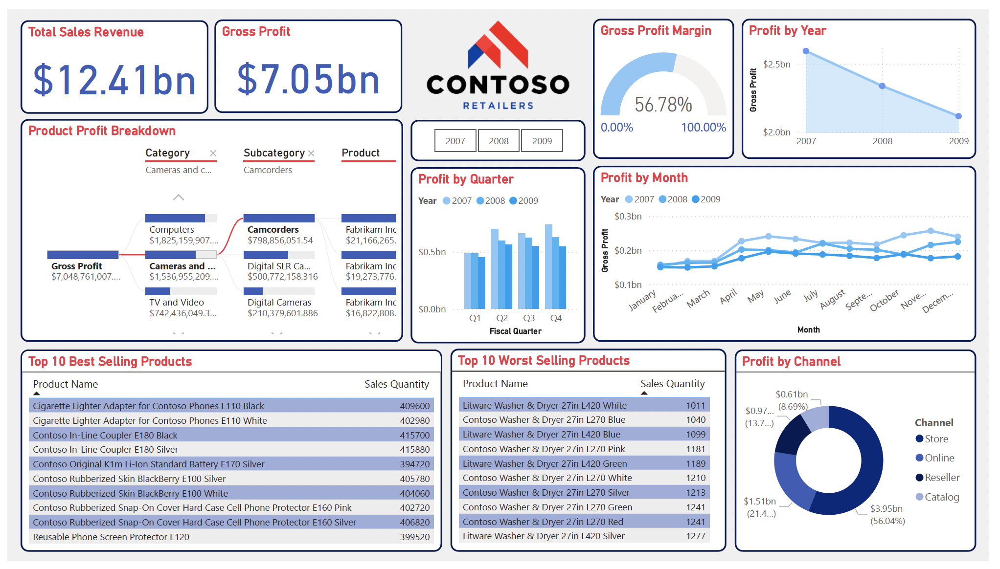

Contoso Retailers Dashboard
About the Project
This dashboard was created for Contoso Retailers the requested information they wanted to be shown was sales info over the years 2007-2009. The data was imported into power BI using a SQL database and I had to correctly format the data in a logical and efficient way. The dashboard was created so it could be dynamic, meaning, if you were to select a certain widget, it would successfully provide you the information you were looking for. Overall, this project showed me how important KPI reporting is and has provided me with a passion for data analysis.
Languages Used
PowerBI SQL Data Analysis